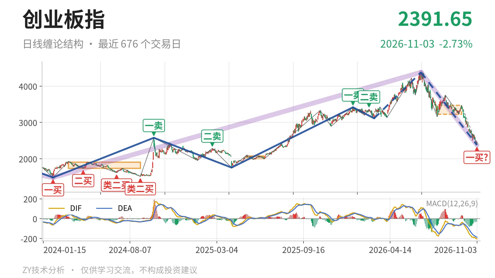

创业板指｜跌至2376点，一买暂定

最近日线中枢 3227.18—3472.47点，收盘位于中枢之下
一句话：日线深跌至中枢下方，11月3日一买暂定，反抽看3227点。
📉 走势结构：上涨段深回挡，下跌段仍延续
日线大级别仍处在2024年2月5日1482.99点至2026年6月25日4380.41点的上涨段中，这段涨约195.4%，尚未走完。6月25日以来的下跌段自4380.41点跌至2376.39点，跌约45.7%，也还没有结束。两段都未完成，当前只能先按上涨段中的深回挡处理，而不直接定性为大级别下跌趋势。日线线段上，6月25日以来的下跌线段已经内含5笔，最新一笔没有结束；该线段低点已跌破3月9日3111.88点，说明线段级别的三买已被打穿，只对应更小级别回升。

🧭 中枢与位置：最新价低于最近中枢下沿25.9%
最新收盘2391.65点，已跌到7月30日至9月22日形成的日线笔中枢下沿3227.18点下方，距下沿约836点，低约25.9%。该中枢区间3227.18—3472.47点，中轴3349.83点，尚未完成。价格远在中枢下方，说明该中枢不能构成支撑，反而成为反抽压力。中枢此前从2025年5月14日至2025年6月23日的1996.96—2076.91点，上移到3227—3472点，但当前又被跌穿。下方更早的2022年4月27日至2023年8月4日线段中枢上沿在2282.65点，距最新价约109点。
🎯 买卖点：11月3日一买暂定，三买失效
11月3日2376.39点在日线笔级别列为一买，但所在下跌笔是9月22日至11月3日，这一笔还在延续，所以这个一买只是暂定的一买。最新价2391.65点在该低点上方，若后续再创新低，一买就要随笔的延续重新界定。3月9日3111.88点的线段级别三买，在6月25日见高4380.41点后已被跌穿，只对应更小级别反弹。近期卖点1月13日3416.84点、2月25日3363.18点一个比一个低，上方压力逐级下移。

⚡ 背驰：面积缩小但DIF新低，信号未完整
最值得比较的是6月25日至7月30日下跌笔与9月22日至11月3日下跌笔。前一笔从4380.41点跌至3158.14点，跌约27.9%，绿柱面积1837，DIF低点-171.1；后一笔从3472.47点跌至2376.39点，跌约31.6%，绿柱面积1099，DIF低点-204.5。跌幅更大，但绿柱面积反而少约738，说明下跌动能在面积上没有同步放大；DIF低点却创得更低，黄白线仍弱，因此还不算完整的“新低不新弱”。该下跌笔还在延续，绿柱面积仍可能变化，所以当前只能说有盘整背驰条件，不能说背驰已经完成。11月3日暂定的一买正是建立在这个不完整信号上。
🔎 关键位置：反抽看3227点，三卖或中枢扩展
当前结构的关键在3227点一线。若后续反抽不能回到3227点上方，7月30日至9月22日的中枢将构成三卖，反抽仍按中枢下方处理。重新站上3227点，则9月22日以来的下跌更可能只是中枢扩展，而不是新下跌段。在重新站上3227点之前，反弹不改变9月22日以来下跌段仍延续的结构。
🗺️ 下方结构：2283点附近是更早中枢边界
下方2283点附近对应2022年4月27日至2023年8月4日线段中枢上沿，是回挡进一步扩展的关键结构位。若跌破2283点附近，价格将进入2122.32—2282.65点区间，下跌段级别会扩大。若在2283点附近止跌并重新站上3227点，回落仍可归为中枢扩展。在重新站上3227点之前，反弹只能先按中枢下方对待。
⚠️ 本文为基于公开行情数据的缠论技术结构记录，由程序自动计算并生成，仅供学习交流，不构成任何投资建议。市场有风险，投资需谨慎。